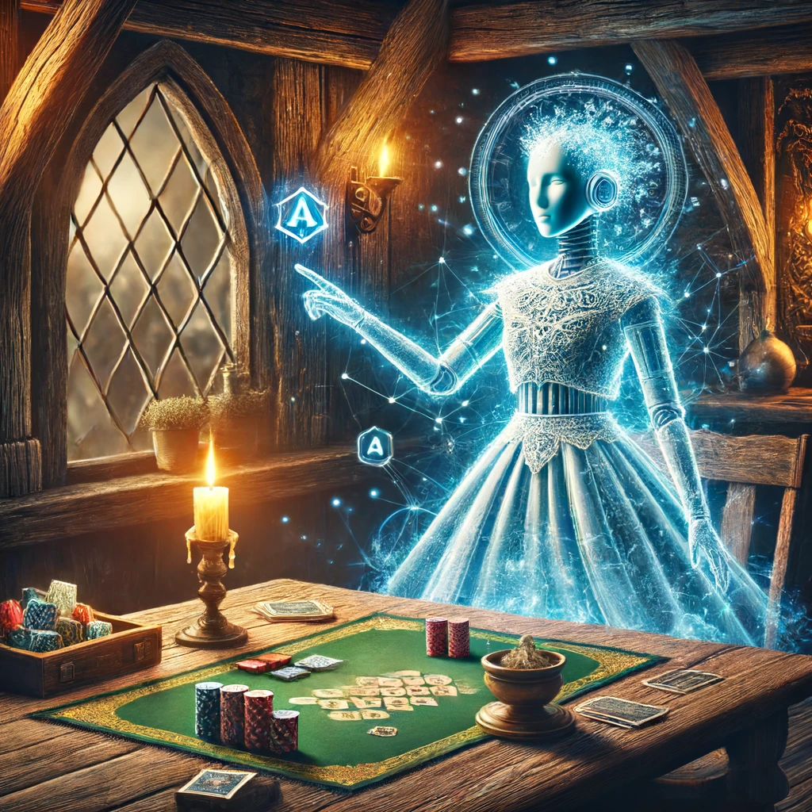

KI-gestützte Ersatzspieler
Nutzen Sie unsere KI-gestützten Spieler und Dungeon Master
Unsere KI-gestützten Ersatzspieler bieten eine innovative Lösung, um das Spielerlebnis konsistent und immersiv zu halten, auch wenn Spieler unerwartet ausfallen. Die KI übernimmt nahtlos die Rolle der fehlenden Spieler und sorgt dafür, dass das Spiel ohne Unterbrechungen weitergeht.
- Nahtlose Integration: Unsere KI übernimmt sofort die Rolle eines Spielers, wenn dieser die Sitzung verlässt, und hält das Spiel am Laufen.
- Natürliche Interaktionen: Die KI agiert wie ein menschlicher Spieler und hält die Immersion aufrecht, indem sie natürliche Interaktionen ermöglicht.
- Dungeon Master Unterstützung: Nutzen Sie die KI als Dungeon Master, um komplette Abenteuer zu leiten und auch alleine spannende Partien zu erleben.
- Anpassungsfähigkeit: Die KI passt sich an den Spielstil und die Entscheidungen der Gruppe an, um ein maßgeschneidertes Spielerlebnis zu bieten.
- Spielverlauf-Tracking: Die KI behält den Überblick über den Spielverlauf und sorgt dafür, dass keine wichtigen Details verloren gehen.
"Die KI-gestützten Ersatzspieler von Tavern haben unser Spielerlebnis revolutioniert. Es fühlt sich an, als wären immer alle Spieler präsent, und das Spiel bleibt stets spannend und dynamisch."